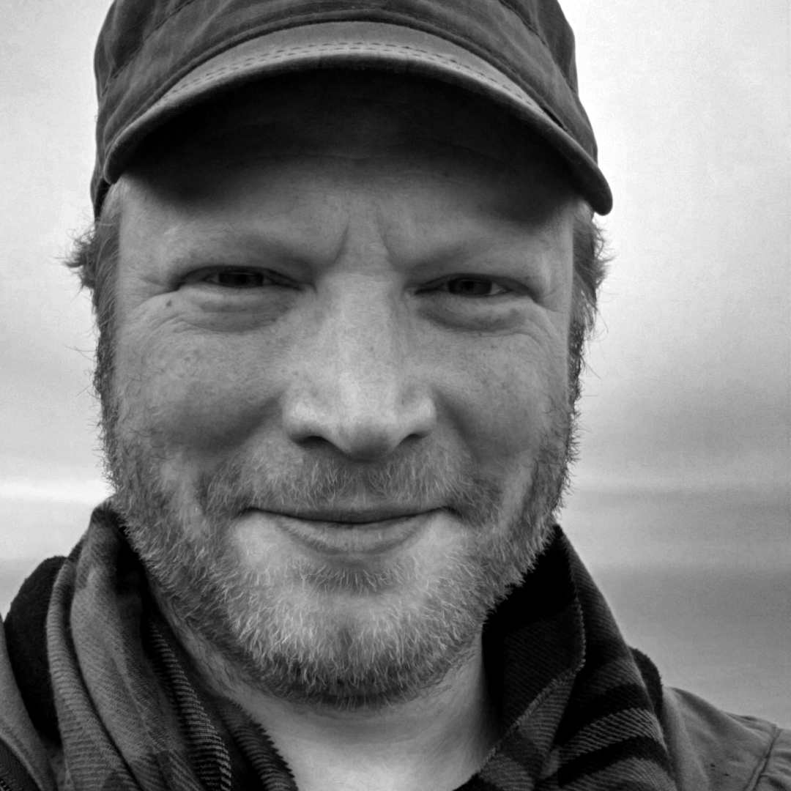

CMCW
science + art + craftsmanship
science + art + craftsmanship
contact{at}cmcw{dot}io
CMCW makes interactive art that collects and disseminates information in beautiful and useful ways.
We offer unique skills and expertise that enable us to concept and build novel data comprehension solutions in literally any medium. Basically we make real-world things that talk to computers, that are useful and beautiful.
CMCW is:
software developer, designer, builder
Brian is a polymath working at the confluence of art and math. In his career as a software developer he has worked on everything from big data projects to video games, highlighting his keen and intuitive understanding of systems. Additionally he has been noted for his graphic design and poster art as well as his carpentry work. He is very excited to be a part of CMCW where he can use all these skill in conjunction.
Dustin Maas, PhD
electrical engineer, maker
Dustin is an engineer. He loves to build things... and take them apart. He has designed and implemented systems that operate at the intersections of human need and bleeding edge technologies. At CMCW, Dustin is leveraging his hardware and signal processing expertise to create beautiful and informative interactive data visualizations.
James Wogan
artist, producer, director
James' expertise in information and communications technology, fine art, and business development are a perfect fit for the team. He enjoys collaborating with engineers and developers to bring to life artistic visions that just wouldn't be possible without new technologies, data science, and craftsmanship. He's worked on EU-funded academic research programmes for several years, and now he's bringing his knowledge and skill-set to CMCW. You can see more of James' commercial portfolio here.
Tyler Cook
props designer and builder for TV and film
As a member of IATSE's Local 44, Affiliated Property Craftsmen, Tyler's art background can be traced to 10 years in children's television, turning empty sets into whimsical art installations. His knowledge of prop design and construction combined with a love of a playful aesthetics round out CMCW.
CMCW makes interactive art that collects and disseminates information in beautiful and useful ways.
We offer unique skills and expertise that enable us to concept and build novel data comprehension solutions in literally any medium. Basically we make real-world things that talk to computers, that are useful and beautiful.
CMCW is:

Brian Corr
software developer, designer, builder
Brian is a polymath working at the confluence of art and math. In his career as a software developer he has worked on everything from big data projects to video games, highlighting his keen and intuitive understanding of systems. Additionally he has been noted for his graphic design and poster art as well as his carpentry work. He is very excited to be a part of CMCW where he can use all these skill in conjunction.
electrical engineer, maker
Dustin is an engineer. He loves to build things... and take them apart. He has designed and implemented systems that operate at the intersections of human need and bleeding edge technologies. At CMCW, Dustin is leveraging his hardware and signal processing expertise to create beautiful and informative interactive data visualizations.
artist, producer, director
James' expertise in information and communications technology, fine art, and business development are a perfect fit for the team. He enjoys collaborating with engineers and developers to bring to life artistic visions that just wouldn't be possible without new technologies, data science, and craftsmanship. He's worked on EU-funded academic research programmes for several years, and now he's bringing his knowledge and skill-set to CMCW. You can see more of James' commercial portfolio here.
props designer and builder for TV and film
As a member of IATSE's Local 44, Affiliated Property Craftsmen, Tyler's art background can be traced to 10 years in children's television, turning empty sets into whimsical art installations. His knowledge of prop design and construction combined with a love of a playful aesthetics round out CMCW.
---o---